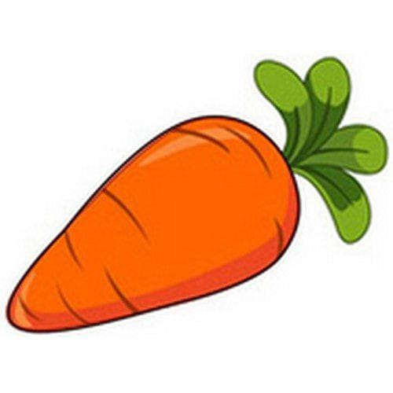

Tentangsayuran.com

Definisi
Buah adalah organ pada tumbuhan berbunga yang merupakan
perkembangan lanjutan dari bakal buah (ovarium). Buah biasanya
membungkus dan melindungi biji. Aneka rupa dan bentuk buah tidak
terlepas kaitannya dengan fungsi utama buah, yakni sebagai pemencar biji
tumbuhan.
Pengertian buah dalam lingkup pertanian ( Hortikultura ) atau
pangan adalah lebih luas daripada pengertian buah di atas dan biasanya
disebut sebagai buah-buahan. Buah dalam pengertian ini tidak terbatas
yang terbentuk dari bakal buah, melainkan dapat pula berasal dari
perkembangan organ yang lain. Karena itu, untuk membedakannya, buah yang
sesuai menurut pengertian botani biasa disebut
Buah sejati.
Buah sering kali memiliki nilai ekonomi sebagai bahan pangan maupun
bahan baku industri karena di dalamnya disimpan berbagai macam produk
metabolisme tumbuhan, mulai dari karbohidrat, protein, lemak, vitamin,
mineral, alkaloid, hingga terpena dan terpenoid. Ilmu yang mempelajari
segala hal tentang buah dinamakan Pomologi.
Wortel

Apel adalah jenis buah-buahan, atau buah yang
dihasilkan dari pohon buah apel. Buah apel biasanya berwarna merah
kulitnya jika masak dan (siap dimakan), namun bisa juga kulitnya
berwarna hijau atau kuning. Kulit buahnya agak lembek, daging buahnya
keras. Buah ini memiliki beberapa biji di dalamnya.
Orang mulai pertama kali menanam apel di Asia Tengah. Kini apel
berkembang di banyak daerah di dunia yang suhu udaranya lebih dingin.
Nama ilmiah pohon apel dalam bahasa Latin ialah
Malus domestica. Apel budidaya adalah keturunan dari
Malus sieversii asal Asia Tengah, dengan sebagian genom dari
Malus sylvestris (apel hutan/apel liar).
Kebanyakan apel bagus dimakan mentah-mentah (tak dimasak), dan juga
digunakan banyak jenis makanan pesta. Apel dimasak sampai lembek untuk
dibuat saus apel. Apel juga dibuat untuk menjadi minuman sari buah apel.
- Menjaga kesehatan mata
- Menjaga daya tahan tubuh
- Meningkatkan sistem kekebalan tubuh
- Baik untuk jantung
- Mengoptimalkan fungsi otak
- Mengurangi risiko diabetes
Daftar Harga
| Jenis Wortel | Harga | |
|---|---|---|
| Per kilo | Per biji | |
| Wortel nantes | 50.000 | 5.000 |
| Wortel baby | 60.000 | 6.000 |
| Wortel imperator | 70.000 | 7.000 |
| wortel danvers | 55.000 | 5.500 |